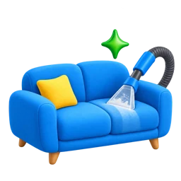

Xizmatni tanlang
Kerakli xizmatni tanlab, qisqa arizaga o‘ting.
Dog‘, chang va yoqimsiz hidlarni professional ekstraktor yordamida chiqaramiz.

Sifat kafolatiNatija yoqmasa, bepul qayta tozalaymizGoClean Toshkentda divan, kreslo va boshqa yumshoq mebellarni kimyoviy tozalaydi. Xizmat mato diagnostikasi, dog‘larga ishlov, professional ekstraktor bilan chuqur tozalash va quritish bo‘yicha tavsiyani o‘z ichiga oladi.
Boshlang‘ich narx bir o‘rindiq uchun 100 000 so‘mdan. Yakuniy narx mebel turi, o‘rindiqlar soni, qoplama materiali va vazifa aniqlashtirilgach aytiladi.
Mato diagnostikasi, dog‘larga ishlov, chuqur ekstraksiya va quritish bo‘yicha tavsiya xizmatning asosiy tarkibidir.
Boshlang‘ich narx bir o‘rindiq uchun 100 000 so‘mdan. Yakuniy narx mebel va vazifa aniqlashtirilgach aytiladi.
Mutlaq natija va’dasi berilmaydi. Ish usuli mato diagnostikasi va dog‘ holatiga qarab tanlanadi.
Aniq muddat oldindan belgilanmaydi. Tozalashdan keyin quritish bo‘yicha tavsiya beriladi; muddat material va sharoitga bog‘liq bo‘lishi mumkin.
GoClean выполняет химчистку диванов, кресел и другой мягкой мебели в Ташкенте. Услуга включает диагностику ткани, обработку пятен, глубокую очистку профессиональным экстрактором и рекомендации по сушке.
Стартовая стоимость — от 100 000 сум за одно посадочное место. Окончательная стоимость определяется после уточнения типа мебели, количества мест, материала обивки и задачи.
Основные этапы — диагностика ткани, обработка пятен, глубокая экстракционная очистка и рекомендации по сушке.
Стартовая стоимость — от 100 000 сум за одно посадочное место. Окончательная стоимость определяется после уточнения мебели и задачи.
Абсолютный результат не обещается. Метод обработки выбирается после диагностики ткани и оценки состояния пятна.
Точный срок заранее не устанавливается. После очистки клиент получает рекомендации по сушке; срок может зависеть от материала и условий.
Kerakli xizmatni tanlab, qisqa arizaga o‘ting.
Faqat ism va telefon raqamingiz yetarli.
Manzil, vaqt, xizmat tarkibi va narxni telefonda aniqlashtiring.